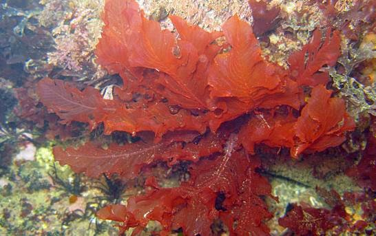

Bryophyta(lumut)

Algae dapat bersel satu (uniseluler) atau bersel banyak (multiseluler). Beberapa algae seperti ganggang hijau dan ganggang biru bersel satu, sementara ganggang merah dan cokelat bersel banyak.
Algae menggunakan klorofil dan pigmen fotosintesis lainnya untuk menghasilkan makanan mereka sendiri melalui proses fotosintesis. Mereka merupakan produsen utama dalam rantai makanan akuatik.
Sel algae dapat dilapisi oleh dinding sel yang terbuat dari selulosa atau polisakarida lain seperti karragenan. Karragenan umumnya ditemukan pada algae merah dan digunakan dalam industri makanan dan kosmetik.
Algae dapat hidup di berbagai habitat, mulai dari air tawar hingga laut, dan dari lingkungan terestrial hingga substrat batuan. Beberapa dapat hidup di lingkungan yang sangat ekstrem.
Algae memainkan peran penting dalam siklus karbon dan oksigen di Bumi. Selama fotosintesis, mereka menyerap karbon dioksida dan melepaskan oksigen.
Beberapa bentuk algae yang umum meliputi ganggang hijau (Chlorophyta), ganggang merah (Rhodophyta), dan ganggang cokelat (Ochrophyta). Di samping itu, terdapat juga ganggang biru (Cyanobacteria) yang kadang dianggap sebagai bakteri.
Algae memiliki peran ekologis yang signifikan dan dapat digunakan dalam berbagai aplikasi, termasuk sebagai sumber makanan, bahan baku industri, dan bahkan sebagai bahan bakar bio.